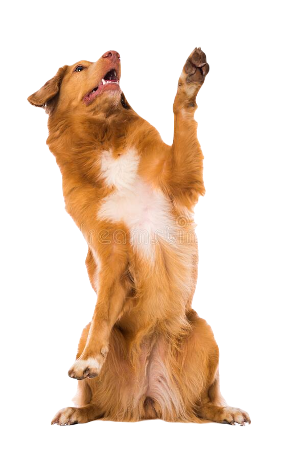
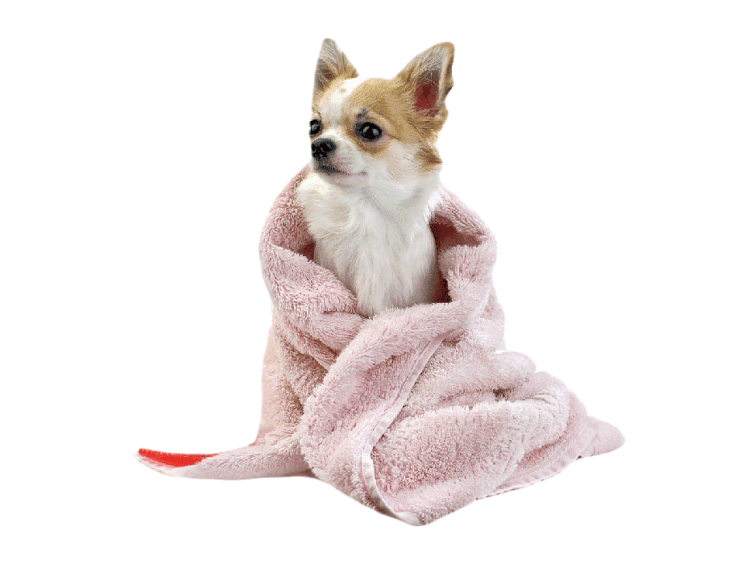
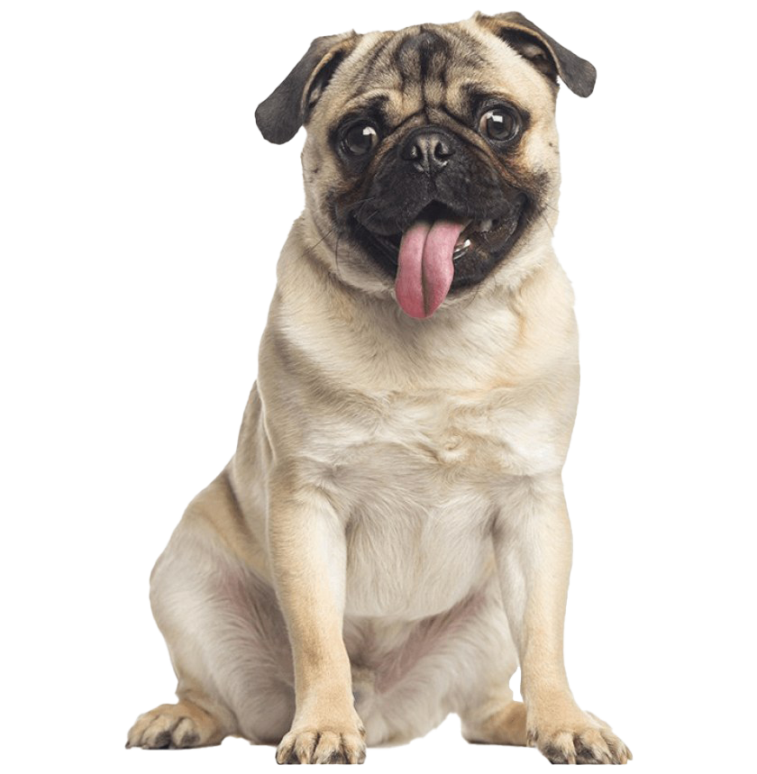
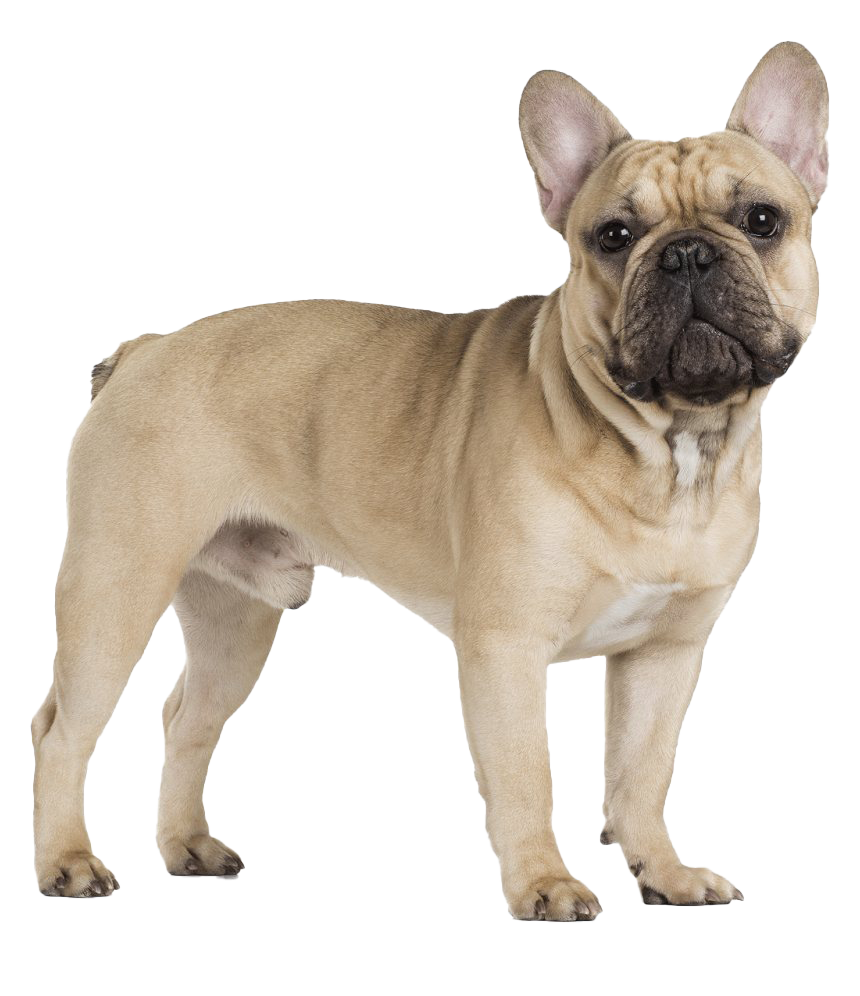
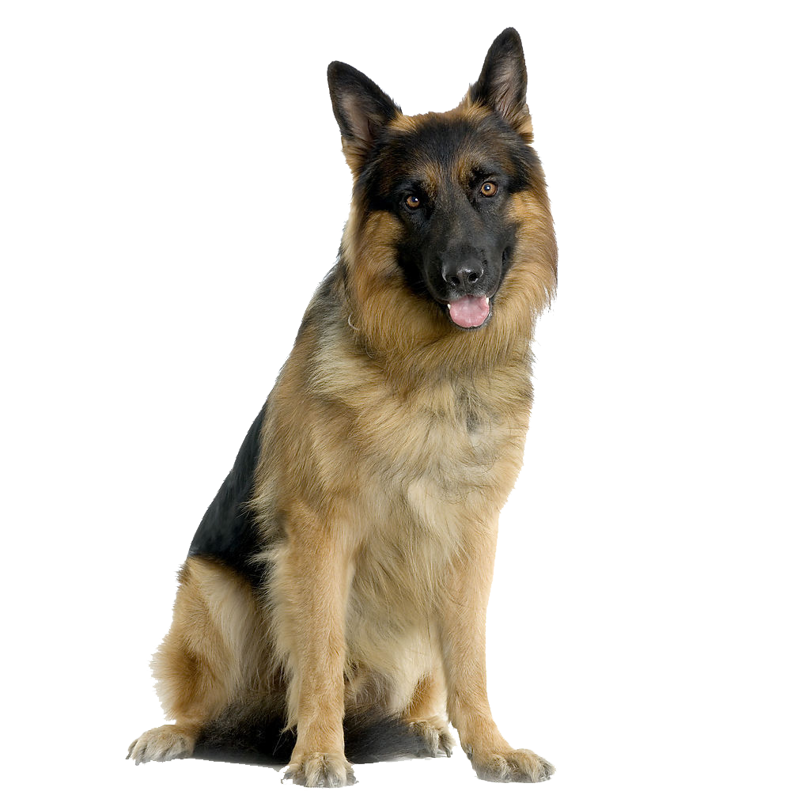

İçerisinde köpek cinsleri ve bakımı hakkında bilgiler içeren bir internet sitesidir
(NOT: Bu site porfolyoya eklenmek için 4 saatte yapılmıştır)

KÖPEK BAKIMI
Salya. Proteinler, bakteriler ve besin parçacıkları bir araya gelerek, dişin üzerinde kalması halinde kademeli olarak birikecek olan plağı oluşturur. Daha sonra salyadaki mineraller bu plağı, diş eti hattı etrafında toplanan sert, sarımsı bir birikim olan diş taşına dönüştürür. Diş taşı, diş etlerini tahriş ederek, periodontal hastalığın başlangıcı olan gingivite yol açabilir.

KÜÇÜK KÖPEK CİNSLERİ

PUG
kafası, büyük yuvarlak gözleri, kırışık kaş ve alın yapısı ile Pug ırkı sadık ve sevecen bir arkadaştır. Sahibine sadıktır, onu memnun etmek için çaba gösterir. Sahibi tarafından sevilmeyi ilgi görmeyi sever. Sevimli bakışları ile çevresindeki insanlara mutluluk verdiği belirtilir. Pug cinsi, ev ortamında yaşamaya ve bakılmaya uygundur. Yaşadığı ortamdaki insanlara çok iyi arkadaşlık yaparlar. Gencinden yaşlısına her yaş grubuyla iletişimi iyidir. Çocuklara olan ilişkileriyle de aile ortamında ayrı bir yer edinirler.

FRANSIZ BULLDOG
Fransız Bulldog arkadaş canlısı bir köpektir. Sahipleri tarafından sevilmeye, ilgi görmeye, oyun oynamaya kısaca onlarla yakın temas kurmaya ihtiyaç duyan bir ırktır. Sevilmediğini, ilgi görmediği hissettiğinde kaygı bozukluğu, endişe gibi psikolojik sorunlar yaşayabilir. Uzun süre ailesinde uzak, yalnız başına bir yerde kalırsa da psikolojik olarak etkilenebilir ve olumsuz davranışlar sergileyebilir. Fransız Bulldog uzun süre yalnız bırakabileceğiniz, dışarıda kulübede yaşamasını bekleyeceğiniz köpek değildir.
BÜYÜK KÖPEK CİNSLERİ
GOLDEN RETRİEVER
Golden Retriever ırkı dişi ya da erkek fark etmeksizin tüylerinin altında kaslı, atletik bir bedene sahiptir. Sakin, tatlı, nazik ve oyuncu bir mizacı vardır. Etrafına sevgi dolu bakan kahverengi gözleriyle tam bir aile köpeğidir. İnsanlarla, çocuklarla ve diğer evcil hayvanlarla oldukça iyi anlaşırlar. Uysal ve sevecen olan Golden’lar tüm aile üyeleri ve çocuklar için ideal bir arkadaştır. Kusursuz bir bekçilik yapma ve yüksek koruma içgüdüsü yoktur. Ancak sadık birer dost oldukları için sahiplerine karşı olabilecek bir tehlikede onları koruma içgüdüsüne sahiptirler.

Alman Çoban Köpeği
Alman Çoban Köpeği ırkı akıllı, zeki ve cesur bir köpektir. Büyük bedeni, çevik, kaslı yapısı ve kendine güvenen halleriyle asil bir duruşa sahiptir. Sahibine karşı çok sadıktır. Kendilerine verilen görevi başarıyla sonlandırmak için ne gerekiyorsa yaparlar. En zeki köpek ırkları arasında yer alır ve çok yönlü bir köpektir. Farklı farklı görevler verildiğinde kararlı ve istikrarlı halleriyle her ne olursa olsun o işi yapmak için çaba gösterirler. Sezgi yeteneklerinin yüksek olması sebebiyle kimi zaman polis kimi zaman da arama kurtarma köpeği olarak görevlerde başrolde görebilirsiniz.